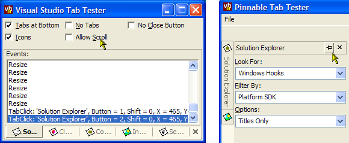
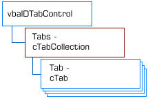

VB5 Pinnable VS Tab Demonstration (21K)
VB5 Pinnable VS Tab Demonstration (21K)
 VB5 VS Tab Control Binary (30K)
VB5 VS Tab Control Binary (30K)
 VB5 VS Tab Control Demonstration (17K)
VB5 VS Tab Control Demonstration (17K)
 VB5 VS Tab Control Full Source (97K)
VB5 VS Tab Control Full Source (97K)
 VB6 Pinnable VS Tab Demonstration (20K)
VB6 Pinnable VS Tab Demonstration (20K)
 VB6 VS Tab Control Binary (30K)
VB6 VS Tab Control Binary (30K)
 VB6 VS Tab Control Demonstration (16K)
VB6 VS Tab Control Demonstration (16K)
 VB6 VS Tab Control Full Source (95K)
VB6 VS Tab Control Full Source (95K)
 vbalDTab6 Interface Definition (1K)
vbalDTab6 Interface Definition (1K)
 Bugs: 4 / 6
Bugs: 4 / 6
 Issues: 6 / 6
Issues: 6 / 6
 Questions: 1 / 1
Questions: 1 / 1
 11 May 2003
11 May 2003
Calling remove on a non-existent tab did not raise an error because the control ate it.
Inserting a tab did not work correctly since the existing tabs were not shuffled up.
If a tab with a panel was removed, and then added, then a subscript out of range error occurred.
Thanks to Michael Elashoff, Julien Margail and Matt Funnell
 Subclassing Without The Crashes
Subclassing Without The Crashes
 Using the System Image List with (and without) vbAccelerator Controls
Using the System Image List with (and without) vbAccelerator Controls
 vbAccelerator ImageList Control and Class v2.0
vbAccelerator ImageList Control and Class v2.0

vbAccelerator Visual Studio Style Tab Control
This control reimplements the tab drawing code used in the vbAccelerator MDITabs Control as a fully-featured Visual Studio style Tab Control, with a fully-typed object interface. It also supports pinning and unpinning tabs, so when they're unpinned they show a small vertical tab-bar which slides-out the tab to the display. Cool!
Features of the Control
The visual style of the tab control closely follows the styles of the tabs displayed in Visual Studio.NET. The design of the control enables the following features:
- Position tabs at the bottom or the top of the control.
- Tabs can be dragged by the user to any position.
- Tabs can optionally display an icon before the caption.
- Set whether tabs are squashed up if there is insufficient room, or whether scroll buttons are displayed.
- A Close button can be displayed, and if it is, you can determine for individual tabs whether the close button is enabled or not.
- Independent fonts for selected and non-selected tabs.
- Disabled tabs can't be selected by the user.
- Pinnable mode allows the tab to display in a compact vertical form where the tabs slide out as the mouse moves over the tabs. Once pinned, the control converts to the standard tab style.
Using the Control
The object model for the Tab control is shown below:
Tab Control Object Model
There are three main areas in using the control:
- Configuring the Control
- Adding and Removing Tabs
- Responding to Events
These will be covered in turn.
Configuring the Control
These properties and methods are exposed through the main control interface. All can be modified at run-time and most can be set in the IDE at design-time.
- Pinnable
Gets/sets whether the control is pinnable. When the control is Pinnable, and Pinned is false, the control will display in a compact vertical form, and when the user moves over the tabs the tab slides out with a button to Pin the tabs in place. When Pinnable is false the control always displays as a set of horizontal tabs. This property defaults to False for compatibility with the previous version of the control. - Pinned
Only relevant when Pinnable is set to True. If the control is Pinnable then this property gets/sets whether the control is pinned or not. - AllowScroll
Gets/sets whether scrolling of the tabs is allowed. When AllowScroll is true, the control will show scroll buttons whenever the control is too small to display all of the tabs. When it is false, the tabs will be squashed up to fit the available space in the control. The property defaults to True. - BackColor
Gets/sets the background colour of the client area of the control. - Font
Gets/sets the font used to draw non-selected tab captions - ForeColor
Gets/sets the colour used to draw the tab captions in the control. - SelectedFont
Gets/sets the font used to draw selected tab captions - ShowCloseButton
Gets/sets whether a close button is displayed at the end of the tabs to allow the user to close the tab. - ShowCloseButton
Gets/sets whether a close button is displayed at the end of the tabs to allow the user to close the tab. - ShowTabs
Gets/sets whether the tabs are shown or not. - TabAlign
Gets/sets whether tabs are displayed at the top or the bottom of the control. - ImageList
Associates an ImageList with the control as a source of icons for the tabs. This can either be a VB ImageList from the VB5 or VB6 Common Controls OCX packages or a handle to any other ComCtl32 ImageList (such as the vbAccelerator Image List Control or Class or the System Image List). This property is set-only and can only be used at run-time. If you want to remove a previously added ImageList, do this:tab.ImageList = 0 ' no ImageList handle - ClientLeft, ClientTop, ClientWidth, ClientHeight
Return the position of the client area relative to the control in pixels (run-time only).
Adding and Removing Tabs
Manipulating the tabs in the control is achieved through the Tabs property of the control, which returns a cTabCollection class. This class supports the following methods:
- Add
Adds or inserts a tab to the control. You can specify the Key, Caption and IconIndex you want for the tab at this point. Once the tab has been created, the method returns a cTab object which you can use to set any additional properties. It is highly recommended to associate a Key with the tab at this point, as the Key cannot be changed later, and as the user can re-order the tabs, you cannot be sure which index a particular tab will be found at. - Count
Returns the number of tabs currently in the control. - Item
Returns a cTab object for the specified Key or index. - Remove
Removes a tab from the control based on its Key or index.
The cTab class is used to get and set all of the properties of an individual tab.
- CanClose
Gets/sets whether the Close button is enabled (if the ShowCloseButton property is set for the control) for this tab. - Caption
Gets/sets the caption for the tab. - Enabled
Gets/sets whether the tab is enabled (can be selected by the user). - IconIndex
Gets/sets the 0-based index of the icon to be displayed for this tab. If you don't want an icon, set to -1 (the default value). - ItemData
Gets/sets an optional long value to be associated with the tab. - Key
Gets the Key for this tab - Panel
Gets/sets a control to be displayed in the ClientArea of the tab when the tab is selected. - Selected
Gets/sets whether the tab is selected or not. - Tag
Gets/sets an optional string value to be associated with the tab. - ToolTipText
Gets/sets the tooltip to be displayed when the mouse hovers over the tab.
Responding to Events
The tab control generates the following events:
- Resize
Raised whenever the control is resized - TabDoubleClick
Raised when a tab is double clicked, passing cTab object. - TabClose
Raised when the close button is clicked for a tab, passing a cTab object for the tab which has been clicked and a Cancel argument, which can be set to True to prevent the tab from being removed, - TabClick
Raised whenever the user clicks a tab. Passes a cTab object and the mouse details for the click. - TabBarClick
Raised whenever the user clicks on a non-tab portion of the tab bar. Passes the mouse details for the click. - TabSelected
Raised whenever the selected tab changes. Provides a cTab object containing details of the selected tab.
Documentation
Documentation for the control, created using ActiveX Documenter is also available as a download.